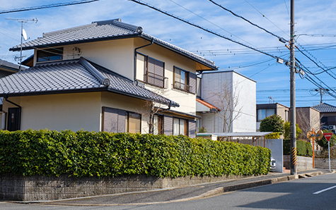
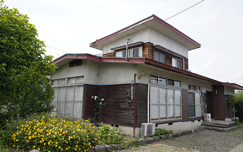
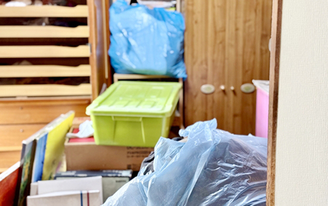
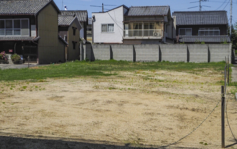
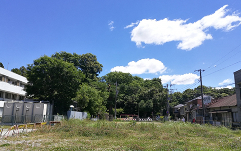
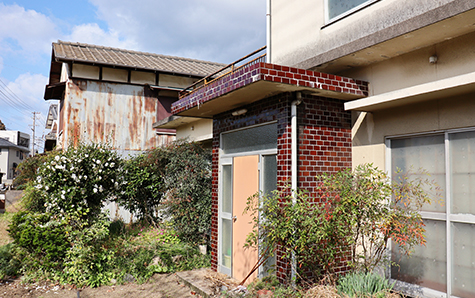
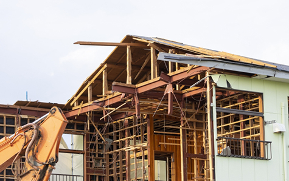
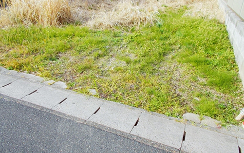

PROPERTY / 空き家・空き地・訳あり
空き家・空き地・訳あり物件も相談できます
相模原市・厚木市で、扱いづらい物件の売却や整理を検討されている方へ。
可能性のある進め方を一緒に考えます。
- ホーム
- 空き家・空き地・訳あり物件
空き家・空き地・訳あり物件
相模原市・厚木市で空き家・空き地・訳あり物件の売却にお悩みの方へ、アイモットが物件の状態や権利関係に合わせた売却方法をご案内します。長期間使用していない不動産や、再建築不可の物件や共有名義、残置物が多い物件も、状況を整理すれば売却できる可能性があります。
代表が直接お話を伺い、納得できる出口を一緒に考えます。
空き家・空き地・訳あり物件にも売却の可能性
空き家や空き地、権利関係や建物の状態に課題がある訳あり物件は、「売れないのではないか」と不安を感じる方が少なくありません。しかし、物件の特徴や課題を正確に把握し、購入対象者を適切に想定することで、売却できる可能性があります。
解体や修繕を先におこなうのではなく、現状のまま査定を受け、複数の方法を比較することが大切です。
※表は左右にスクロールして確認することができます。
| 物件種別 | 主な課題 | 主な売却方法 |
|---|---|---|
| 空き家 | 老朽化・残置物・管理負担 | 中古戸建て・古家付き土地・買取 |
| 空き地 | 雑草・境界・活用方法 | 仲介・買取・隣地への売却 |
| 訳あり物件 | 権利関係・再建築・心理的要因 | 専門的な仲介・買取・権利調整 |
空き家を放置する前に
売却や活用を検討しましょう

空き家は使用していなくても、固定資産税や火災保険、草木の手入れ、建物管理などの負担が続きます。定期的に換気や清掃をおこなわないと、建物の劣化が進み、売却時の評価に影響する可能性があります。
今後利用する予定がない場合は、管理を続ける費用と売却した場合の手取り額を比較し、早めに方針を決めましょう。
空き家の老朽化は時間とともに進みます
人が住まなくなった建物は、換気不足による湿気やカビ、給排水設備の劣化、雨漏りなどが生じやすくなります。庭木や雑草が伸びると、近隣に迷惑をかけたり、不法侵入のリスクが高まったりすることもあります。
建物の状態が悪化するほど、修繕費や解体費が増える可能性があるため、使う予定がない場合は早めに売却を検討することが大切です。
維持費や管理の負担が続きます
空き家を所有している間は、固定資産税、保険料、管理費、清掃費などの支出が発生します。遠方に住んでいる場合は、現地確認のための交通費や時間も必要です。
費用をかけて維持する価値があるか、将来的に利用する予定があるかを整理しましょう。売却だけでなく、賃貸や管理を含めて比較すると、適した選択肢を選びやすくなります。
空き家を売却する
主な方法

空き家の売却方法には、中古戸建てとして売る方法、古家付き土地として売る方法、建物を解体して更地で売る方法、不動産会社に買い取ってもらう方法があります。建物の状態や立地、再建築の可否、解体費用によって適した方法は異なります。工事や残置物処分を進める前に、現状のまま査定を受けることが重要です。
中古戸建てとして売却する
建物を利用できる状態であれば、中古戸建てとして売却できます。築年数が古くても、リフォームやDIYを前提に探している購入希望者が見つかる可能性があります。雨漏りや設備の故障などがある場合は、正確に伝えたうえで価格や契約条件に反映させます。修繕費をかける前に、現状のままで需要があるかを確認しましょう。
古家付き土地として売却する
建物の価値がほとんど残っていない場合でも、古家付き土地として販売できます。買主が建物を利用するか、購入後に解体するかを選べるため、売主が解体費を負担せずに売却できる可能性があります。
一方で、解体費用を見込んだ価格交渉が入ることもあります。土地の価値と建物の状態を分けて査定することが大切です。
更地にして売却する
建物を解体して更地にすると、土地の広さや形状が分かりやすくなり、新築を検討する買主に訴求しやすくなります。
ただし、解体費が必要になり、建物がなくなることで固定資産税の負担が変わる場合があります。再建築不可の土地では、解体後に新しい建物を建てられない可能性もあるため、事前の調査が欠かせません。
不動産会社に買い取ってもらう
空き家を早く整理したい場合や、建物の状態が悪い場合は、不動産会社による買取が選択肢になります。広告や複数回の内覧が原則として不要で、残置物や修繕が必要な状態でも相談できる可能性があります。
ただし、仲介より売却価格が低くなる傾向があります。価格だけでなく、処分費用や引き渡し条件を含めた手取り額を確認しましょう。
空き家の残置物は処分前に相談しましょう

相続した実家などでは、家具、家電、衣類、生活用品が大量に残っていることがあります。すべてを売主が処分しなければ売却できないとは限りません。買取や売却条件によっては、残置物を残したまま引き渡せる可能性もあります。先に処分業者に依頼せず、処分費用と売却条件を比較してから進めることが大切です。
必要な物と処分する物を分ける
残置物の整理では、権利証、通帳、印鑑、写真、貴金属など、重要な物が混在している可能性があります。急いですべてを処分せず、相続人や家族で必要な物を確認しましょう。
特に相続した空き家では、遺品整理と不用品処分を分けて考える必要があります。作業量が多い場合は、専門業者への依頼も選択肢になります。
処分費用を含めて売却条件を比較する
残置物を処分してから仲介で売る方法と、荷物を残したまま買取を利用する方法では、売却価格と売主の負担が異なります。査定額が高くても、処分費用や清掃費が高くなれば、手取り額が少なくなる場合があります。提示された価格だけで判断せず、売却完了までに必要な費用と時間を含めて比較しましょう。
空き地は管理と境界の確認が重要です

空き地は建物がないため売却しやすいと思われがちですが、境界、接道、土地の形状、地中埋設物などの確認が必要です。雑草や不法投棄を放置すると、近隣トラブルや管理負担につながる可能性があります。
住宅用地、駐車場、資材置き場など、土地の利用方法によって購入対象が異なるため、地域の需要を踏まえて販売方法を決めましょう。
雑草や不法投棄への対策が必要です
空き地を放置すると、雑草や樹木が隣地や道路へ広がることがあります。ごみの不法投棄や無断駐車が発生する可能性もあるため、定期的な管理が必要です。売却活動中も土地の印象が悪くならないよう、草刈りやごみの撤去をおこないましょう。ただし、大がかりな造成や整地は、査定を受けてから判断することをおすすめします。
境界標や測量図を確認する
土地売却では、隣地との境界が明確かどうかが重要です。境界標が見つからない場合や、測量図と現況が異なる場合は、土地家屋調査士による測量が必要になることがあります。塀や樹木、配管などが越境している場合は、隣地所有者との調整も必要です。売却期限に影響するため、査定時に早めに確認しましょう。
接道状況と建築条件を調べる
土地に建物を建築するには、道路との接し方など一定の条件を満たす必要があります。道路の種類や幅員、接道する長さによっては、建築できる建物に制限がかかったり、再建築できなかったりする場合があります。また、市街化調整区域など、土地利用に制限がある地域もあります。利用可能な用途を確認したうえで販売することが大切です。
地中埋設物や過去の利用状況を確認する
以前に建物があった土地では、古い基礎、浄化槽、井戸、配管、がれきなどが地中に残っている場合があります。過去に工場や店舗として利用されていた土地では、土壌の状態を確認する必要が生じることもあります。把握している情報は不動産会社へ伝え、必要に応じて調査や契約条件の整理をおこないましょう。
空き地を売却する
主な方法

空き地は、一般の買主を探す仲介、不動産会社による買取、隣地所有者への売却などが選択肢になります。住宅を建てやすい土地は仲介で幅広く購入希望者を探せますが、形状や接道に課題がある土地は、隣地と一体で利用することで価値が高まる場合があります。土地の特徴に合わせて購入対象者を見極めましょう。
仲介で住宅用地や事業用地として売る
立地や土地形状が良く、住宅や事業に利用しやすい場合は、仲介によって幅広く買主を探せます。建築会社と連携して建築プランを提示することで、購入後の利用方法をイメージしてもらいやすくなる場合もあります。土地の面積や用途地域、建ぺい率、容積率など、建築に関する情報を整理して販売することが大切です。
隣地所有者へ売却する
単独では利用しにくい狭小地や不整形地でも、隣地と一体で利用すれば価値が高まる可能性があります。隣地所有者が駐車場や庭、建て替え時の敷地として購入を希望する場合もあります。
ただし、直接交渉すると価格や境界をめぐるトラブルになることがあります。不動産会社を通じて条件を整理し、書面で契約することが重要です。
買取で管理負担を早く解消する
遠方の空き地や、雑草管理に負担を感じている土地は、買取による早期売却も選択肢です。接道や形状に課題がある場合でも、不動産会社によっては活用方法を見込んで買取できる可能性があります。仲介より価格が低くなる傾向はありますが、管理費用や売却期間を抑えられます。手取り額と今後の負担を比較しましょう。
訳あり物件とは複雑な事情を抱える不動産です

訳あり物件とは、建物の状態、土地の条件、権利関係、過去の出来事などにより、一般的な不動産より売却が難しいと考えられる物件を指します。ただし、課題の内容によって、必要な対応や購入対象者は異なります。
「訳ありだから売れない」と決めつけず、問題点を一つずつ整理し、売却できる状態に整えることが重要です。
再建築不可・接道に課題がある物件
建築基準法上の道路に一定以上接していない土地では、建物を解体すると再建築できない場合があります。再建築不可物件は住宅ローンを利用しにくく、一般の買主が限られる傾向があります。
一方で、リフォームして利用する方や、隣地所有者、投資家などが購入する可能性があります。解体せず、現状を正確に調査してから販売しましょう。
共有名義の不動産
共有名義の不動産全体を売却するには、原則として共有者全員の同意が必要です。共有者同士で意見がまとまらない場合や、連絡が取れない場合は、売却手続きが進められません。共有持分のみを売却する方法もありますが、価格や買主が限られる傾向があります。感情的な対立を避けながら、条件や分配方法を整理することが大切です。
底地・借地権が関係する不動産
土地と建物の所有者が異なる底地や借地権付き建物では、地代、契約期間、更新条件、譲渡承諾などの確認が必要です。地主や借地人との関係によって売却方法が変わり、通常の所有権物件より調整に時間がかかる場合があります。契約書や支払い状況を確認し、必要に応じて弁護士などの専門家と連携して進めます。
事故や告知事項がある物件
物件内で過去に事故や死亡などがあった場合は、内容によって買主への説明が必要になることがあります。事実を隠して売却すると、契約後のトラブルにつながる可能性があります。
一方で、状況や経過期間、物件の利用目的によって購入を検討する方もいます。自己判断で広告や説明をおこなわず、不動産会社に事実を伝えて販売方法を検討しましょう。
雨漏り・傾き・シロアリ被害がある物件
建物に雨漏り、傾き、腐食、シロアリ被害などがあっても、現状のまま売却できる可能性があります。修繕してから売る方法もありますが、工事費を売却価格に上乗せできるとは限りません。
不具合の内容を正確に伝え、修繕費を見込んだ価格で仲介する方法や、不動産会社に買い取ってもらう方法を比較しましょう。
訳あり物件を売却する主な方法
訳あり物件では、課題を解消してから一般の買主へ売る方法、現状を開示したうえで仲介する方法、不動産会社や投資家へ買い取ってもらう方法があります。問題を解消する費用と、解消によって期待できる価格上昇を比較することが重要です。すべての課題を売主が解決する必要はなく、現状のまま引き継ぐ方法もあります。
課題を整理して仲介で売却する
境界、相続登記、共有者の同意など、解決できる課題を整理することで、一般の購入希望者に販売できる場合があります。問題点と対応状況を明確にし、買主が判断できる情報を提供することが重要です。課題解決に時間や費用がかかる場合は、売却期限とのバランスを確認し、どこまで対応するかを決めましょう。
現状のまま専門的な買主へ売却する
再建築不可、老朽化、共有持分などの物件は、一般の買主ではなく、活用や権利調整の知識を持つ不動産会社や投資家が購入する場合があります。売主が課題をすべて解消せずに売却できる可能性がありますが、価格は一般的な物件より低くなる傾向があります。売却条件と売主の負担を確認し、納得したうえで進めましょう。
売却前に解体やリフォームを急がないでください

建物が古い、傷みが目立つという理由だけで、解体やリフォームを先におこなう必要はありません。再建築不可物件を解体すると活用方法が限られたり、工事費を回収できず手取り額が減ったりする可能性があります。購入希望者が自分で改修したい場合もあるため、現状のまま査定を受け、工事前後の価格と費用を比較しましょう。
解体によって売却しにくくなる場合があります
建物付きであれば居住や賃貸に利用できても、解体後に再建築できなければ、土地の利用方法が大きく限られます。また、土地の固定資産税に関する負担が変わる可能性もあります。解体する前に、接道状況、建築制限、解体費用、建物付きでの需要を確認しましょう。解体後は元に戻せないため、慎重な判断が必要です。
リフォーム費用を回収できるとは限りません
売却前に水回りや内装を新しくしても、購入希望者の好みに合わない場合があります。工事費を売却価格へそのまま上乗せできず、手取り額が減ることもあります。安全上必要な修繕や、少額で印象を改善できる清掃などを優先し、大がかりなリフォームは査定結果と販売戦略を確認してから判断しましょう。
複雑な物件に対応できる
不動産会社を
選びましょう
空き家・空き地・訳あり物件の売却では、単に査定価格を提示するだけでなく、売却を妨げる課題を見つけ、解決方法を示せる不動産会社を選ぶことが大切です。問題点を理由にすぐ買取を勧めるのではなく、仲介や権利調整など、複数の選択肢を比較してくれる担当者へ相談しましょう。
物件の課題を具体的に説明してくれるか
「古いから売れない」「訳ありだから価格が低い」といった説明だけでは、適切な判断はできません。どの部分が売却へ影響するのか、解決できる課題か、現状のまま売れるかを具体的に確認しましょう。調査内容や査定価格の根拠を分かりやすく説明し、売主が選択できる情報を提供してくれる会社が安心です。
仲介と買取の両方を検討できるか
複雑な物件でも、条件を整理すれば仲介で売却できる場合があります。
一方、課題解決に費用や時間がかかる場合は、買取の方が売主の負担を抑えられることもあります。どちらか一方へ誘導するのではなく、想定価格、費用、期間、リスクを比較し、売主の希望に合う方法を提案してくれる会社を選びましょう。
売却を急がせず事情を整理してくれるか
空き家の管理負担や相続人同士の話し合いなど、売主が焦りを感じている状況では、早く決めたい気持ちが強くなります。しかし、十分な説明を受けずに契約すると、後悔につながる可能性があります。売却を急がせるのではなく、事情や優先順位を整理し、納得できる判断を支えてくれる担当者へ相談することが大切です。
空き家・空き地・訳あり物件をご相談ください

空き家・空き地・訳あり物件は、建物の状態や権利関係によって売却方法が異なります。解体、修繕、残置物処分を先に進めるのではなく、まずは現状を調査し、仲介・買取など複数の方法を比較しましょう。課題が複数ある場合も、一つずつ整理することで、納得できる売却への道筋をつくることができます。
複雑な事情を整理し、売却まで伴走します
アイモットでは、空き家・空き地・訳あり物件をすぐに「売れない物件」と判断しません。代表が直接お話を伺い、物件の状態、権利関係、売却期限、管理負担などを丁寧に整理します。必要に応じて専門家とも連携しながら、仲介・買取を含む選択肢をご提案します。相模原市・厚木市でお困りの方は、現状のままご相談ください。